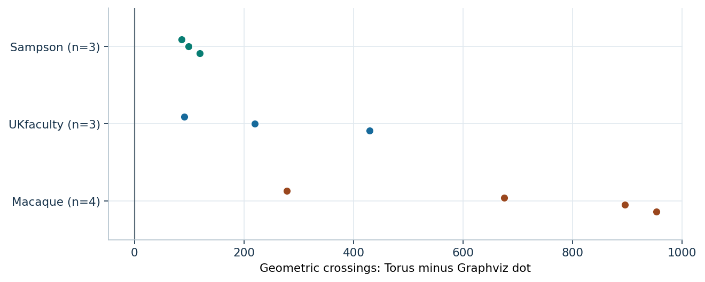
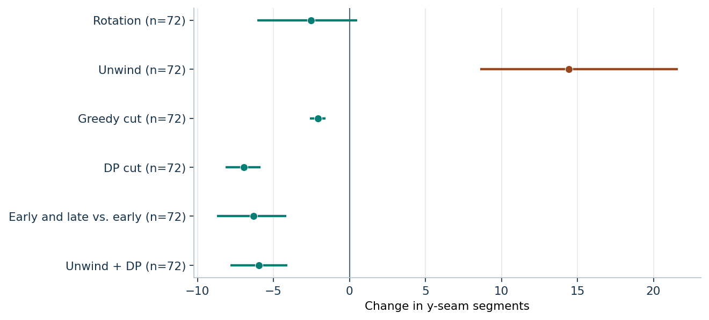
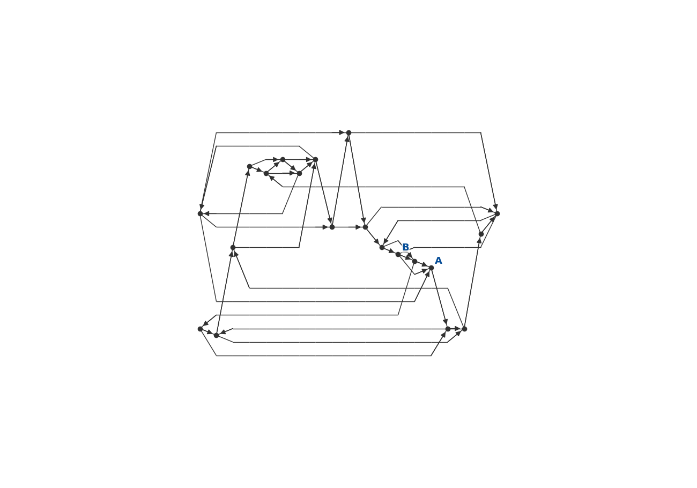
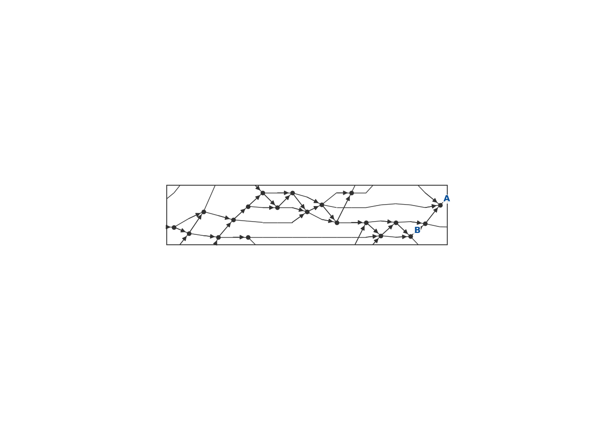
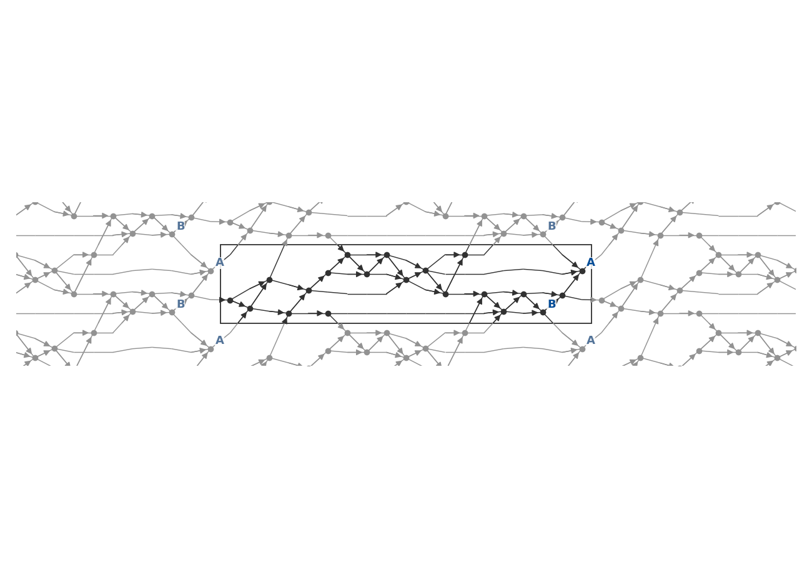

要旨
トーラス上に有向階層を描く方式について、完成図、個別工程、求解と描画の正しさを評価した。初回の統制生成・公開データ比較、15グループの追試、実装上の不一致を確認した再現試験を、工程ごとに照合した。
同じ骨格20件で円環に沿う方向はdotより平均3.00交差少なく、ランダム方向は7.05多かった。SCCを一つに保った対照でも再現した。
再試行を含め比較できた10条件すべてでdotより多かった。残る1条件は層探索中に停止した。
DPは固定埋め込みの線分最少値と一致。UNWINDなしの候補も残すと交差を変えずに通過線分を減らせる例があった。
トーラスは辺の向きを階層の進行に保つうえで有用だった。交差、境界を通る辺、曲がり、計算時間には別々の制約がある。参加者の読解成績とフルライセンス環境での規模限界は未測定。
方法と既往研究
比較対象は現行トーラス、平面杉山、放射型、Graphviz dot。内部対照の円筒条件ではトーラスの層割当を使い、層内方向の巻き数を0に固定した。パイプラインは層割当、ダミー挿入、層内順の初期化、sifting、回転・共通巻きの除去・切れ目選択、座標割当、周期境界での描画で構成する。
初回の主比較は4生成族、10・16頂点、辺数2n・4n、各3 seedの48入力。工程別は24頂点を含む72入力を基本とした。公開GraphMLの小標本は29件。追試では同じ無向骨格を有向化する条件、SCC固定、元から有向のネットワーク、予算・単体処理・規模の比較を加えた。計画に記載した大きい生成サイズと反復数は、実行時の予算とライセンスに合わせて絞った。
交差は中心線の横切りを異なる元辺ごとに数え、重なりと接触を分けた。逆行辺は階層進行に対する逆行で、元の矢印そのものは平面・放射でも復元する。上下については通過した元辺、分割線分、巻きの回数を区別した。条件差は同じ入力に対する対応差。区間は入力単位のbootstrap 2,000反復による探索的な95%区間で、完走し両指標が揃った組で計算した。入力が重複する公開標本では個別の差を重視した。
文献ごとの実験意図と今回の設計への反映
- 杉山・田川・戸田（1981）。階層化した有向グラフの描画を工程に分け、ランダムな階層で交差削減を厳密値と比較した。工程単体と完成図を併せて測る構成の出発点。 一次資料
- Gansner ほか（1993）。階層化、層内順序、座標、配線という実用パイプラインを提示。Graphviz dotを外部対照に置く根拠。 一次資料
- Healy・Nikolov（2002）。寸法制約を伴うDAGの階層化を評価。層数に加え、総スパン・層幅・ダミー数を測る設計につなげた。 一次資料
- Bachmaier ほか（2008）。循環階層のスパンを、小規模の厳密値と大規模の時間計測で評価。多点開始の品質と時間の両方を調べた。 一次資料
- Eiglsperger ほか（2005）。長辺の多い人工例とランダム入力で、正規化後の規模・時間・交差を測定。今回のダミー挿入比較と規模指標に対応。 一次資料
- Jünger・Mutzel（1997）。2層の片側固定と両側可変を分け、厳密法との比較と密度・規模を振った評価を実施。小規模全列挙と探索回数の比較に対応。 一次資料
- Bachmaier（2007）。放射・平面と交差削減法の組合せを比較し、交差改善と計算費用を評価。円形重心・回転・共通巻き除去の分離に対応。 一次資料
- Bachmaier ほか（2011）。正規化後のサイズ・掃引回数・ダミー間交差を測定し、品質改善に伴う時間を報告。今回も交差・反復・時間を同時に測った。 一次資料
- Brandes・Köpf（2002）。固定した順序上で各方向の整列・圧縮を統合し、辺の直線性と幅を評価。今回のBK内部処理の比較に対応。 一次資料
- Jünger・Mutzel・Spisla（2019）。共通の前段で座標方式を比較し、幅、辺長、時間のトレードオフを評価。周期を固定した座標比較に対応。 一次資料
- Di Battista ほか（2000）。公開入力と生成DAGで複数の描画方式を比較し、交差・曲がり・面積で優劣が変わることを示した。今回の全体評価を多指標にした。 一次資料
- Bachmaier ほか（2012）。最後の層から最初の層に戻る循環階層を描画し、閉路を一方向に追える例を示した。今回の円筒対照と逆行辺計数に対応。 一次資料
- Lionakis ほか（2022）。階層図を計算指標と参加者の到達可能性・最短路課題で評価。幾何指標と人の成績を別に測る設計に対応。 一次資料
- Chen ほか（2020）。トーラスの周辺文脈とパン操作によるリンク・経路読解を評価。固定した中央配置に周辺タイルを加える実験を設計した。 一次資料
1. フレームワーク全体
初回の統制生成では、平面杉山との41組で逆行辺が平均5.32本減り、幾何交差が13.54増えた。dotとの48組では交差が平均25.48増加。同じ層割当の円筒との48組では46組で交差が減り、平均差は−22.00だった。第二の周期方向に交差を減らす効果がある一方、境界をまたぐ元辺は円筒より平均7.44本多かった。
初回のWatts–Strogatzの好結果を受け、追試で骨格を固定し、辺の向きだけを4通りに変えた。最も改善したのは円環に沿う向きで14/20件がdotより少ない。部分反転、ランダム、DAGでは平均差が正になった。SCC固定でも円環沿いは平均−2.50、追加辺のランダム反転は＋5.40、追加辺を逆向きにすると＋5.60だった。循環の有無だけで適用範囲を決めるには根拠が足りない。
初回の公開GraphML 29件は、Romeの有向化後も含め全件DAGだった。そこでSampsonの3時点、UKfacultyとmacaqueの14頂点の誘導部分グラフを各4件計測した。トーラスは初回7/11件、再試行後10/11件。比較できた10件すべてでdotより交差が多く、平均差＋384.50、中央値＋249。時点と誘導部分グラフの重複があるため、これは採用した実例の記述結果である。
| 差の定義（左 − 右） | 対応数 | 平均差 | 中央値 | 平均差 95%区間 | 減 / 同 / 増 |
|---|---|---|---|---|---|
| 平面杉山との幾何交差 | 41 | 13.54 | 4 | [5.34, 23.76] | 17 / 1 / 23 |
| dotとの幾何交差 | 48 | 25.48 | 10.50 | [13, 38.52] | 11 / 2 / 35 |
| 同じ層割当を使った円筒との幾何交差 | 48 | -22 | -15.50 | [-29.35, -15.71] | 46 / 2 / 0 |
| 平面杉山との逆行辺 | 41 | -5.32 | -5 | [-6.95, -3.93] | 31 / 10 / 0 |
| 平面杉山との境界通過元辺 | 41 | 10.63 | 8 | [8.83, 12.68] | 0 / 0 / 41 |

| 入力 | トーラス | dot | トーラス − dot |
|---|---|---|---|
| UKfaculty-induced-0 | — | 320 | — |
| UKfaculty-induced-1 | 733 | 304 | 429 |
| UKfaculty-induced-2 | 138 | 47 | 91 |
| UKfaculty-induced-3 | 350 | 130 | 220 |
| macaque-induced-0 | 1,442 | 489 | 953 |
| macaque-induced-1 | 909 | 234 | 675 |
| macaque-induced-2 | 1,405 | 510 | 895 |
| macaque-induced-3 | 403 | 125 | 278 |
| sampson-time-1 | 109 | 23 | 86 |
| sampson-time-2 | 159 | 40 | 119 |
| sampson-time-3 | 126 | 27 | 99 |
初回の全方式・生成族・公開GraphML・代表図
同じ有向グラフを各方式で描き、出来上がった辺の中心線を共通の測定器で数えた。円筒対照では層内方向の巻き数を 0 に固定した。UNWIND・DP なしの条件は境界処理の追加効果を調べるためのもの。平面・放射型の閉路除去で反転した辺は描画時に元の向きに戻るが、階層方向には逆行する。

統制生成グラフ
| 方式 | 完了 / 試行 | 制限付き完了 | 幾何交差 | 重なり辺対 | 逆行辺 | 境界を通る元辺 | 曲がり | 正規化総辺長 | 時間 (s) |
|---|---|---|---|---|---|---|---|---|---|
| トーラス | 48/48 | 4 | 31.50 | 0.00 | 0.00 | 9.50 | 48.50 | 12.59 | 0.45 |
| 平面杉山 | 41/48 | 0 | 19 | 1 | 5 | 0 | 24 | 10.11 | 0.90 |
| 放射型 | 28/48 | 0 | 7.50 | 1.50 | 4.00 | 0.00 | — | 11.74 | 1.39 |
| Graphviz dot | 48/48 | 0 | 20.00 | 0.00 | 5.00 | 0.00 | 77.00 | 11.83 | 0.09 |
| 円筒対照 | 48/48 | 4 | 52.00 | 0.00 | 0.00 | 4.50 | 53.50 | 11.67 | 0.38 |
| UNWIND・DP なし | 48/48 | 4 | 31.50 | 0.00 | 0.00 | 13.00 | 50.50 | 14.20 | 0.44 |
| 差の定義（左 − 右） | 対応数 | 平均差 | 中央値 | 平均差 95%区間 | 減 / 同 / 増 |
|---|---|---|---|---|---|
| トーラス − 平面杉山／統制生成 | 41 | 13.54 | 4 | [5.34, 23.76] | 17 / 1 / 23 |
| トーラス − 放射型／統制生成 | 28 | 13.32 | 6.00 | [6.54, 21.18] | 7 / 1 / 20 |
| トーラス − Graphviz dot／統制生成 | 48 | 25.48 | 10.50 | [13, 38.52] | 11 / 2 / 35 |
| トーラス − 円筒対照／統制生成 | 48 | -22 | -15.50 | [-29.35, -15.71] | 46 / 2 / 0 |
| トーラス − UNWIND・DP なし／統制生成 | 48 | 0 | 0.00 | [0, 0] | 0 / 48 / 0 |
| 差の定義（左 − 右） | 対応数 | 平均差 | 中央値 | 平均差 95%区間 | 減 / 同 / 増 |
|---|---|---|---|---|---|
| DAG／平面杉山 | 10 | 9.60 | 5.00 | [2.10, 18.50] | 2 / 0 / 8 |
| DAG／Graphviz dot | 12 | 24.58 | 11.50 | [11.50, 39.75] | 0 / 1 / 11 |
| Random／平面杉山 | 11 | 15.55 | 5 | [1.36, 34.55] | 5 / 0 / 6 |
| Random／Graphviz dot | 12 | 40.75 | 19.50 | [16.33, 67.67] | 0 / 0 / 12 |
| SCC chain／平面杉山 | 11 | 32.64 | 9 | [12.27, 54.18] | 1 / 1 / 9 |
| SCC chain／Graphviz dot | 12 | 52.25 | 36.50 | [29.50, 76.67] | 0 / 0 / 12 |
| Watts–Strogatz／平面杉山 | 9 | -7.89 | -4 | [-12.11, -4] | 9 / 0 / 0 |
| Watts–Strogatz／Graphviz dot | 12 | -15.67 | -9.00 | [-27.50, -6.33] | 11 / 1 / 0 |
公開グラフの小標本
研究者の公開ミラーに収録された AT&T / North、Rome、RandDAG から、取得できた 10・12・16・20・24 頂点の候補を各サイズ最大 2 件ずつ測定した。掲載リストから SHA 順に抽出した探索的標本で、全コレクションの代表性は評価していない。旧形式の方向指定はコレクションの属性から補った。Rome は各辺を固定 seed で有向化した。データミラー · 元ファイル URL と Git blob SHA
| 方式 | 完了 / 試行 | 制限付き完了 | 幾何交差 | 重なり辺対 | 逆行辺 | 境界を通る元辺 | 曲がり | 正規化総辺長 | 時間 (s) |
|---|---|---|---|---|---|---|---|---|---|
| トーラス | 29/29 | 0 | 3 | 0 | 0 | 4 | 16 | 4.57 | 0.10 |
| 平面杉山 | 29/29 | 0 | 3 | 0 | 0 | 0 | 10 | 6.38 | 0.11 |
| 放射型 | 28/29 | 0 | 2.50 | 0.00 | 0.00 | 0.00 | — | 9.82 | 0.82 |
| Graphviz dot | 29/29 | 0 | 1 | 0 | 0 | 0 | 22 | 5.30 | 0.08 |
| 円筒対照 | 29/29 | 0 | 5 | 0 | 0 | 0 | 19 | 4.53 | 0.09 |
| UNWIND・DP なし | 29/29 | 0 | 3 | 0 | 0 | 5 | 17 | 4.57 | 0.10 |
| 差の定義（左 − 右） | 対応数 | 平均差 | 中央値 | 平均差 95%区間 | 減 / 同 / 増 |
|---|---|---|---|---|---|
| トーラス − 平面杉山／公開標本 | 29 | 0.52 | -1 | [-1.14, 3.03] | 16 / 6 / 7 |
| トーラス − 放射型／公開標本 | 28 | 0.32 | 0.00 | [-1.32, 1.93] | 10 / 6 / 12 |
| トーラス − Graphviz dot／公開標本 | 29 | 3.90 | 1 | [1.52, 7.86] | 1 / 9 / 19 |
| トーラス − 円筒対照／公開標本 | 29 | -4.52 | -4 | [-6.17, -3.07] | 22 / 7 / 0 |
| トーラス − UNWIND・DP なし／公開標本 | 29 | 0 | 0 | [0, 0] | 0 / 29 / 0 |
| 差の定義（左 − 右） | 対応数 | 平均差 | 中央値 | 平均差 95%区間 | 減 / 同 / 増 |
|---|---|---|---|---|---|
| AT&T / North／平面杉山 | 10 | 2.90 | 1.00 | [-1.20, 9.20] | 4 / 1 / 5 |
| AT&T / North／Graphviz dot | 10 | 7.10 | 1.50 | [1.20, 17] | 0 / 3 / 7 |
| Rome（有向化）／平面杉山 | 9 | -1.56 | -1 | [-2.78, -0.67] | 7 / 2 / 0 |
| Rome（有向化）／Graphviz dot | 9 | 1.22 | 0 | [-0.11, 3.33] | 1 / 4 / 4 |
| RandDAG／平面杉山 | 10 | 0 | -0.50 | [-1.50, 1.90] | 5 / 3 / 2 |
| RandDAG／Graphviz dot | 10 | 3.10 | 2.50 | [1.60, 4.90] | 0 / 2 / 8 |
結果の評価
平面杉山法と対応した41組では、交差は17組で減り、23組で増え、1組で同じだった。重なり辺対は平均2.93組減った一方、境界を通る元辺は平均10.63本増えた。逆行をなくす利点と、辺を追う際に境界を行き来する負担が同時に現れる。
層内の巻き数を0に固定した円筒対照との48組では、交差が46組で減り、残り2組は同数だった。平均差は−22.00、境界を通る元辺は平均7.44本増えた。二方向の周期を使えることの効果は内部対照で確認できる。平面・放射・dotに対する一律の優位までは支持されなかった。
公開標本29件はいずれも、Romeの有向化後を含め、実測では非巡回だった。平面杉山法より交差が減った例は16件あったが、平均差は＋0.52、dotとの平均差は＋3.90だった。本標本が確かめるのは、小さな非巡回入力での副次的な挙動。循環グラフ全般への外挿にはより広い公開データが必要になる。
初回の長めの予備実行では放射型で多数の時間切れが発生した。全体の主比較は10・16頂点を均等に含む48入力、各方式のworker上限14秒に切り替えた。放射型では20件、平面杉山法では7件の時間切れ。トーラスとdotは48/48件完了した。時間切れの多い方式の品質差は完走した入力に限られる。
方向の統制とSCC固定。全条件の図表
同じ無向Watts–Strogatz骨格を、12・16頂点、再配線率0.10・0.35、各5 seedで生成した。骨格ごとに4種の有向化を行い、ラベルと辺集合を固定した。トーラスとdotは80条件とも完走した。各辺を確率0.25で反転する条件とランダム条件には共通乱数を使った。

| 差の定義（左 − 右） | 対応数 | 平均差 | 中央値 | 平均差 95%区間 | 減 / 同 / 増 |
|---|---|---|---|---|---|
| 円環に沿う | 20 | -3 | -2.00 | [-5.20, -0.85] | 14 / 2 / 4 |
| 各辺を確率0.25で反転 | 20 | 3.45 | 3.00 | [1.10, 5.55] | 5 / 0 / 15 |
| ランダムな向き | 20 | 7.05 | 6.00 | [5, 9.05] | 0 / 2 / 18 |
| ランダム順序に沿うDAG | 20 | 6.50 | 5.50 | [4.25, 8.95] | 1 / 1 / 18 |
| 差の定義（左 − 右） | 対応数 | 平均差 | 中央値 | 平均差 95%区間 | 減 / 同 / 増 |
|---|---|---|---|---|---|
| 各辺を確率0.25で反転 − 円環に沿う | 20 | 6.45 | 5.50 | [3.60, 8.95] | 1 / 1 / 18 |
| ランダムな向き − 円環に沿う | 20 | 10.05 | 8.50 | [6.75, 13.60] | 0 / 0 / 20 |
| ランダム順序に沿うDAG − 円環に沿う | 20 | 9.50 | 8.50 | [6.40, 12.60] | 1 / 1 / 18 |
円環沿いでは20件中14件で交差が減り、ランダム方向では18件で増えた。元の階層方向と整合するような辺の向きが特に重要だと解釈できる。
全頂点を一つのSCCに固定
12・16頂点の有向閉路に同じ追加辺を入れ、追加辺の向きだけを変えた。強連結性を30条件すべてで保った。
| 差の定義（左 − 右） | 対応数 | 平均差 | 中央値 | 平均差 95%区間 | 減 / 同 / 増 |
|---|---|---|---|---|---|
| 追加辺も円環沿い | 10 | -2.50 | -1.00 | [-4.30, -1.10] | 9 / 1 / 0 |
| 追加辺をランダムに反転 | 10 | 5.40 | 2.50 | [1.80, 9.80] | 0 / 2 / 8 |
| 追加辺をすべて逆向き | 10 | 5.60 | 3.50 | [0.90, 11.40] | 1 / 1 / 8 |
各条件10件で、平均差は円環沿い−2.50、ランダムに反転＋5.40、すべて逆向き＋5.60。今回の方向効果を「SCCがない図との違い」だけでは説明できない。フィードバック辺数・次数は向きとともに変わり得る。
元から有向の公開データ。入力と再試行の明細
Sampsonの3時点と、UKfaculty・macaqueの最大SCCを起点にした誘導部分グラフ各4件。後者は弱連結BFSの先頭14頂点を使い、元の向きを維持した。Sampsonの時点間や誘導部分グラフ間には重複がある。求解または描画で止まった4例を、モデルごと3秒・方式ごと25秒で再試行した。
| 入力 | 頂点 | 辺 | 最大SCCの割合 | 既定の初回 | 既定の再試行 | トーラス交差 | dot交差 | 交差差 | 線形・1回掃引の交差 |
|---|---|---|---|---|---|---|---|---|---|
| sampson-time-1 | 18 | 55 | 1.00 | 完了 | — | 109 | 23 | 86 | — |
| sampson-time-2 | 18 | 57 | 1.00 | 完了 | — | 159 | 40 | 119 | — |
| sampson-time-3 | 18 | 56 | 0.94 | 完了 | — | 126 | 27 | 99 | — |
| UKfaculty-induced-0 | 14 | 99 | 0.93 | 実行エラー | 実行エラー | — | 320 | — | — |
| UKfaculty-induced-1 | 14 | 98 | 1.00 | wall_timeout | 完了 | 733 | 304 | 429 | 820 |
| UKfaculty-induced-2 | 14 | 51 | 0.79 | 完了 | — | 138 | 47 | 91 | — |
| UKfaculty-induced-3 | 14 | 71 | 1.00 | 完了 | — | 350 | 130 | 220 | — |
| macaque-induced-0 | 14 | 119 | 1.00 | 実行エラー | 完了 | 1,442 | 489 | 953 | 1,225 |
| macaque-induced-1 | 14 | 99 | 1.00 | 完了 | — | 909 | 234 | 675 | — |
| macaque-induced-2 | 14 | 119 | 1.00 | wall_timeout | 完了 | 1,405 | 510 | 895 | 1,321 |
| macaque-induced-3 | 14 | 77 | 0.79 | 完了 | — | 403 | 125 | 278 | — |
既定のトーラスでは3例を追加で回収し、比較できた10例すべてで交差が増えた。平均差は＋384.50で、密な部分グラフが差を押し上げている。残る1例はモデルごと8秒・方式ごと55秒まで伸ばしても、層割当中に実行可能解がないまま終わった。現実の循環があるだけで、円環沿いの人工グラフと同じ利点が得られるとは考えにくい。8秒での再試行
出典と取得形式は、各入力のマニフェストに記録した。Sampson · UKfacultyとmacaque
平面・放射・dot・トーラスを同じ時計予算で再比較
前回から族ごとに時間切れを最大2例、その他を1例選んで12入力を再試行した。独立の再試行で計測した方式単位の壁時計時間を用い、仮に6・14・24秒で打ち切る場合の完了数を数えた。6秒と14秒で個別にアルゴリズムを中断して再スタートした結果ではない。
| 方式 | 試行 | 6秒 | 14秒 | 24秒 | 以前に時間切れがあった入力で完了 | 同対象数 |
|---|---|---|---|---|---|---|
| トーラス | 12 | 12 | 12 | 12 | 8 | 8 |
| Graphviz dot | 12 | 12 | 12 | 12 | 8 | 8 |
| 平面杉山 | 12 | 11 | 12 | 12 | 8 | 8 |
| 放射型 | 12 | 4 | 5 | 6 | 2 | 8 |
平面杉山法は今回14秒で12/12件、放射型は24秒でも6/12件だった。前回の平面法の一部の欠測が実行制限・負荷に敏感だったことが分かる。放射型の品質比較には依然として欠測偏りがある。新旧の実行時間は単純に同一条件とみなせない。
2. 層数探索と層割当
左右境界を通る元辺数を先に抑え、その数を達成できる最小層数を二分探索する。全候補の厳密値と90/90件で一致し、求解回数を平均8.61回削減した。固定層数案に比べ64組中51組で通過元辺が減り、平均−5.03本、層数は平均＋4.36層。固定案は8件で実行不能だった。
同じ層数と通過元辺数で、線形・二乗和・QP・重心方式などを比較した。二乗和では対象のスパン二乗和を改善したが、完成図の交差は初回で平均＋0.13、追試で＋0.88。層を増やす対照も改善と悪化が混在した。低予算の二次モデルに実行可能初期解を渡すと、解ありは14/16件から16/16件に改善。低予算で最適終了はどちらも13件だった。
UKfacultyの未完走例では14層で33本を最適と確認した後、7層では8秒で実行可能解がなく、読み出しで停止した。保存した下界は43本なので、7層で目標33本は達成不能と判断できる。未確定の終了状態を扱えるようにし、下界を判定に使う修正点が明らかになった。
2. 階層数探索と分配
二分探索はまず左右境界を通る元辺の目標数を定め、それを達成する最小層数を探す。固定案には ceil(√(2n)) 層を与えた。分配の比較では同じ層数と通過辺数を固定し、追加最適化なし、総和、二乗和、QP、重心法を比較した。固定案で解が得られなかった入力は試行数に残し、完成図の対応差からは外した。

| 方式 | 完了 / 試行 | 制限付き完了 | 層数 | 左右通過辺 | 求解回数 | 時間 (s) |
|---|---|---|---|---|---|---|
| binary | 72/72 | 8 | 9.00 | 4.50 | 5.00 | 0.06 |
| fixed_sqrt | 64/72 | 8 | 6.00 | 8.00 | 1.00 | 0.03 |
| 方式 | 完了 / 試行 | 制限付き完了 | 総スパン | 二乗和 | 最大スパン | 予測ダミー数 | 時間 (s) |
|---|---|---|---|---|---|---|---|
| feasible | 72/72 | 8 | 112.50 | 425.50 | 7.00 | 69.00 | 0.01 |
| diff | 72/72 | 8 | 105.00 | 362.50 | 7.00 | 64.00 | 0.01 |
| diff_square | 72/72 | 9 | 106.50 | 346.50 | 7.00 | 64.00 | 0.01 |
| qp | 72/72 | 8 | 107.00 | 346.50 | 7.00 | 64.00 | 0.02 |
| barycenter | 72/72 | 8 | 105.00 | 354.50 | 7.00 | 64.00 | 0.01 |
| 方式 | 完了 / 試行 | 制限付き完了 | 層数 | 左右通過辺 | 総スパン | 探索＋分配時間 (s) |
|---|---|---|---|---|---|---|
| default | 72/72 | 9 | 9.00 | 4.50 | 106.50 | 0.09 |
| fixed_sqrt | 59/64 | 10 | 6 | 8 | 86 | 0.18 |
| double_layers | 71/71 | 8 | 16 | 4 | 127 | 0.10 |
| 差の定義（左 − 右） | 対応数 | 平均差 | 中央値 | 平均差 95%区間 | 減 / 同 / 増 |
|---|---|---|---|---|---|
| 二分探索 − 固定層数／左右通過辺 | 64 | -5.03 | -3.50 | [-6.52, -3.70] | 51 / 13 / 0 |
| 二分探索 − 固定層数／層数 | 64 | 4.36 | 3.00 | [3.23, 5.55] | 9 / 4 / 51 |
| 二乗和 − 総和／スパン二乗和 | 72 | -4.29 | 0.00 | [-7.42, -1.82] | 24 / 48 / 0 |
| 二乗和 − 総和／総スパン | 72 | 0.40 | 0.00 | [0.19, 0.65] | 0 / 58 / 14 |
| 二乗和 − 総和／最長スパン | 72 | -0.06 | 0.00 | [-0.11, -0.01] | 4 / 68 / 0 |
| 二乗和 − 総和／完成図の交差 | 72 | 0.12 | 0.00 | [-2.06, 1.83] | 14 / 45 / 13 |
| 既定 − 固定層数／完成図の交差 | 58 | -21.52 | -6.50 | [-31.40, -11.84] | 41 / 7 / 10 |
| 2 倍層数 − 既定／完成図の交差 | 71 | -0.30 | 0 | [-3.20, 3.18] | 17 / 44 / 10 |
結果の評価
二分探索は固定層数案との64組中51組で左右通過辺を減らし、平均で5.03本少なかった。層数は平均4.36増えた。固定案は8件でGurobiが実行不能を返しており、通過辺数と層の少なさの両方を優先すると解けない入力がある。
二乗和を目的にした方式は総和方式との72組でスパン二乗和を平均4.29減らした。最大スパンが縮んだのは4組で、総スパンは14組で増加。完成図の交差差は平均＋0.13で、両改善方向が混在した。長辺の分布を調整する目的は支持されるが、最終交差の低下は分配目的だけでは説明できない。
固定案の完成図を評価できた58組では、既定割当の交差が平均21.52少なかった。2倍層数の条件との71組では平均差が0.30で、層の追加そのものには一貫した優位がなかった。
固定層数案の後段では、二乗和分配が2秒上限までに実行可能解を見つけず、解の読み出しで5件の例外が発生した。固定層数探索での実行不能8件や後段のworker時間切れ1件とは原因が異なる。
4. 層割当の初期解と目的関数
16入力について、層数と左右通過元辺数を固定し、実行可能な割当を二次目的のMIP startとして渡す条件を比較した。WorkLimitは壁時計秒と異なるGurobiの作業量。初期解の準備費用は別行に記録した。線形総和・二乗和・最大2層増の条件では、後段も測定した。
| 条件 | 試行 | 実行可能解あり | 最適終了 |
|---|---|---|---|
| cold_0.03 | 16 | 14 | 13 |
| warm_0.03 | 16 | 16 | 13 |
| cold_0.25 | 16 | 16 | 15 |
| warm_0.25 | 16 | 16 | 16 |
| 差の定義（左 − 右） | 対応数 | 平均差 | 中央値 | 平均差 95%区間 | 減 / 同 / 増 |
|---|---|---|---|---|---|
| 二乗和 − 線形／スパン二乗和 | 16 | -5.19 | 0.00 | [-10.75, -0.88] | 5 / 11 / 0 |
| 二乗和 − 線形／完成図交差 | 16 | 0.88 | 0.00 | [-1.19, 3.25] | 1 / 11 / 4 |
| 最大2層追加 − 既定／完成図交差 | 16 | -0.88 | 0.00 | [-4.31, 1.50] | 2 / 12 / 2 |
低予算では初期解なしの14/16件に対し、ありは16/16件で解を返した。最適終了は双方13件。より高い予算では最適終了が15件から16件になった。同じ層数で二乗和は狙った指標を改善したが、完成図の交差は平均＋0.88だった。層数を増やす場合も完成図への効果には両方向があった。
3. 長辺の分割
同じ割当で各端点を探索する旧版と、頂点から層への索引を使う現行版を比較した。初回72/72件で全出力が一致し、単位スパンと予測ダミー数も一致した。長辺を増やした追試では50・200・800頂点で各9反復、全27試行で同じ結果だった。800頂点では中央値156.23 msから99.07 msへ短縮した。
800頂点の例は分割後にダミー140,426個、線分142,826本。索引は挿入を速くするが、後段が処理するグラフの大きさは残る。時間の説明には元の頂点数と分割後の線分数・最大層幅の両方が必要である。
3. ダミー頂点の挿入
階層割当を固定し、各辺の端点が属する階層を全探索する旧法と、頂点→階層の索引を使う現行法を比較した。同じ入力層の比較では頂点列・辺列・層・巻きフラグ・重みの完全一致を調べた。各元辺の経路が連続し、分割後の各線分が階層方向に一つ進むことも検査した。
| 方式 | 検査数 | 旧出力と完全一致 | Σ(s−1) と一致 | 単位スパン違反ケース | ダミー数の中央値 |
|---|---|---|---|---|---|
| current_lookup | 72 | 72 | 72 | 0 | 64.00 |
| explicit_empty_layers | 72 | 72 | 72 | 0 | 64.00 |
| 差の定義（左 − 右） | 対応数 | 平均差 | 中央値 | 平均差 95%区間 | 減 / 同 / 増 |
|---|---|---|---|---|---|
| current_lookup − legacy_lookup／時間 (s) | 72 | -0.00 | -0.00 | [-0.00, 0.00] | 62 / 0 / 10 |
| explicit_empty_layers − current_lookup／時間 (s) | 72 | 0.00 | -0.00 | [0.00, 0.00] | 41 / 1 / 30 |
結果の評価
現行の索引化は72/72件で旧実装と同一の出力を返した。分割数の式と単位スパンも全件で一致した。この入力では明示的に空層を入れた条件も同じ結果だった。絶対時間差は小さく、併走負荷もあるため処理速度は傾向として読む。
4. 層内順序・交差・切れ目
円形重心は初期交差を平均141.19減らし、sifting後にも平均6.49の差が残った。siftingは初期化だけより平均9.86交差減らし、全体最良状態を残すguard付きはguardなしより37組で少なかった。5回と10回は72件すべて同値。追試では1回と5回で15/16件が同値、4開始で5/16件に改善があった。4開始の総探索時間は平均0.334秒増えた。
巻き数0の小規模全列挙ではsiftingが32/40件で最適値と一致、最大差4。巻き数±1の全列挙では自由化で9/20件の厳密値が改善し、自由siftingは20件でその値に一致した。ただし19件が交差0の小問題だった。別途、2層構成では異なる帯の辺を局所的に交差として数える実装上の問題が再現した。
回転は角度変位を平均で減らしたが、21/72件で増えた。切れ目DPは線分数について厳密列挙と初回40/40件、人工ストレス36/36件で一致した。既定UNWIND＋DPはDP単独より通過線分が21/72件で多かった。DP単独候補を加えると既定より初回5/24件、追試2/28件で減り、交差は変わらなかった。長辺・複数巻きの人工例では36件中2件で、通過線分数と通過元辺数の最少値を与える切れ目が異なった。
| 計数箇所 | 交差数 |
|---|---|
| siftingの局所目的 | 1 |
| 層順と巻き数の全体計数 | 0 |
| 描画された中心線 | 0 |
4. 交差削減と境界処理
分割グラフを固定し、円形重心で初期化し、同じ入力から sifting の有無・回数・guard・巻き数の自由度を変更した。次に回転、層間の共通巻きを引く UNWIND、上下境界を通る線分の本数を最小化する切れ目 DP を比較した。回転の角度変位は一周を 1 とし、上下通過線分と幾何交差は個別に測った。
| 差の定義（左 − 右） | 対応数 | 平均差 | 中央値 | 平均差 95%区間 | 減 / 同 / 増 |
|---|---|---|---|---|---|
| Circular barycenter | 72 | -141.19 | -78.50 | [-181.38, -104.12] | 70 / 2 / 0 |
| Barycenter + same sifting | 72 | -6.49 | -1.00 | [-12.99, -1.29] | 38 / 11 / 23 |
| Guarded sifting | 72 | -9.86 | -1.00 | [-15.07, -5.53] | 42 / 30 / 0 |
| Guard effect | 72 | -6.61 | -1.00 | [-11.53, -3.19] | 37 / 35 / 0 |
| Variable winding | 72 | -7.03 | 0.00 | [-11.78, -3.25] | 32 / 21 / 19 |

| 差の定義（左 − 右） | 対応数 | 平均差 | 中央値 | 平均差 95%区間 | 減 / 同 / 増 |
|---|---|---|---|---|---|
| Rotation | 72 | -2.51 | 2.00 | [-6.06, 0.50] | 24 / 5 / 43 |
| Unwind | 72 | 14.43 | 3.00 | [8.60, 21.60] | 13 / 22 / 37 |
| Greedy cut | 72 | -2.06 | -2.00 | [-2.60, -1.56] | 44 / 28 / 0 |
| DP cut | 72 | -6.96 | -6.00 | [-8.14, -5.86] | 69 / 3 / 0 |
| Early and late vs. early | 72 | -6.29 | -2.00 | [-8.71, -4.14] | 39 / 33 / 0 |
| Unwind + DP | 72 | -5.96 | -5.00 | [-7.82, -4.07] | 61 / 5 / 6 |
| 方式 | 完了 / 試行 | 制限付き完了 | 幾何交差 | 上下通過線分 | 上下通過元辺 | 総辺長 | 時間 (s) |
|---|---|---|---|---|---|---|---|
| unwind_0_dp_0 | 72/72 | 9 | 57.00 | 15.00 | 12.00 | 255.64 | 0.51 |
| unwind_1_dp_0 | 72/72 | 9 | 57.00 | 20.00 | 18.00 | 312.48 | 0.47 |
| unwind_0_dp_1 | 72/72 | 9 | 57.00 | 10.00 | 10.00 | 258.39 | 0.49 |
| unwind_1_dp_1 | 72/72 | 9 | 57.00 | 8.50 | 8.50 | 243.81 | 0.49 |
| 差の定義（左 − 右） | 対応数 | 平均差 | 中央値 | 平均差 95%区間 | 減 / 同 / 増 |
|---|---|---|---|---|---|
| 幾何交差 | 72 | 0 | 0.00 | [0, 0] | 0 / 72 / 0 |
| 上下通過元辺 | 72 | -3.51 | -4.00 | [-5.14, -1.83] | 58 / 3 / 11 |
| 総辺長 | 72 | 2.31 | -0.54 | [-93.92, 116.64] | 42 / 2 / 28 |
| 工程時間 (s) | 72 | -0.02 | 0.00 | [-0.08, 0.03] | 23 / 0 / 49 |
| 差の定義（左 − 右） | 対応数 | 平均差 | 中央値 | 平均差 95%区間 | 減 / 同 / 増 |
|---|---|---|---|---|---|
| DP だけ − 両方なし | 72 | -6.96 | -6.00 | [-8.14, -5.86] | 69 / 3 / 0 |
| UNWIND だけ − 両方なし | 72 | 14.43 | 3.00 | [8.60, 21.60] | 13 / 22 / 37 |
| 両方あり − DP だけ | 72 | 1 | 0.00 | [-0.65, 2.83] | 30 / 21 / 21 |
初期化・sifting・回転・UNWIND・DPの全条件
| 方式 | 完了 / 試行 | 制限付き完了 | 工程内交差 | 内部線分交差 | 角度変位の総和 | 上下通過線分 | 時間 (s) |
|---|---|---|---|---|---|---|---|
| input_order | 72/72 | 9 | 150.00 | 0.00 | 20.46 | 27.00 | 0.00 |
| circular_barycenter | 72/72 | 9 | 59.50 | 0.00 | 15.08 | 10.00 | 0.00 |
| 方式 | 完了 / 試行 | 制限付き完了 | 工程内交差 | 内部線分交差 | 角度変位の総和 | 上下通過線分 | 時間 (s) |
|---|---|---|---|---|---|---|---|
| no_sifting | 72/72 | 9 | 59.50 | 0.00 | 15.08 | 10.00 | 0.00 |
| rounds_1 | 72/72 | 9 | 53.50 | 0.00 | 17.03 | 12.50 | 0.10 |
| default | 72/72 | 9 | 57.00 | 0.00 | 17.03 | 13.00 | 0.49 |
| rounds_10 | 72/72 | 9 | 57.00 | 0.00 | 17.03 | 13.00 | 0.98 |
| no_guard | 72/72 | 9 | 59.50 | 0.00 | 25.66 | 18.50 | 0.43 |
| fixed_winding | 72/72 | 9 | 57.00 | 0.00 | 15.08 | 10.00 | 0.30 |
| 方式 | 完了 / 試行 | 制限付き完了 | 工程内交差 | 内部線分交差 | 角度変位の総和 | 上下通過線分 | 時間 (s) |
|---|---|---|---|---|---|---|---|
| off | 72/72 | 9 | 57.00 | 0.00 | 17.03 | 13.00 | 0.00 |
| unguarded | 72/72 | 9 | 57.00 | 0.00 | 17.37 | 15.00 | 0.00 |
| guarded | 72/72 | 9 | 57.00 | 0.00 | 17.37 | 15.00 | 0.00 |
| 方式 | 完了 / 試行 | 制限付き完了 | 工程内交差 | 内部線分交差 | 角度変位の総和 | 上下通過線分 | 時間 (s) |
|---|---|---|---|---|---|---|---|
| off | 72/72 | 9 | 57.00 | 0.00 | 17.37 | 15.00 | 0.00 |
| inner_only | 72/72 | 9 | 57.00 | 0.00 | 20.66 | 21.00 | 0.00 |
| full | 72/72 | 9 | 57.00 | 0.00 | 20.66 | 20.00 | 0.00 |
| 方式 | 完了 / 試行 | 制限付き完了 | 工程内交差 | 内部線分交差 | 角度変位の総和 | 上下通過線分 | 時間 (s) |
|---|---|---|---|---|---|---|---|
| off | 72/72 | 9 | 57.00 | 0.00 | 17.37 | 15.00 | 0.00 |
| greedy | 72/72 | 9 | 57.00 | 0.00 | 16.98 | 12.50 | 0.00 |
| dp | 72/72 | 9 | 57.00 | 0.00 | 17.95 | 10.00 | 0.00 |
結果の評価
円形重心初期化は初期交差数を平均141.19減らし、70/72組で改善。同じsiftingをその後に適用すると差は平均−6.49まで縮まった。既定siftingは初期化のみからさらに平均9.86減らし、guardを外した条件より37組で交差が少なかった。5回から10回に増やしても72組の交差数は変わらなかった。巻き数を更新できる条件は固定条件より改善した組と悪化した組の両方があり、探索経路への依存が残る。
guard付き回転で角度変位の総和は平均2.995周分減ったが、21組では増加した。切れ目DPは貪欲案より66/72組で上下通過線分を減らした。DPだけなら無処理比で69組減少、3組同数、平均−6.96本。UNWINDとDPを併用した既定処理は61組で減少する一方、6組で増加し、平均−5.96本にとどまった。幾何交差は72組全てで同じだった。
UNWINDを先に適用すると巻き数の候補集合が変わる。DP単体を比較対象にしたときも、併用で通過線分が増えた入力が21件あった。この理由から、DPだけの候補を残す対照を別途実行した。
6. 小規模入力での厳密照合
階層数は 1 から n まで探索して、左右通過辺数・層数の辞書式最小値と照合した。順序探索は全ての巻き数を 0 に固定し、全ての層内順序の反転数を独立に計算した。切れ目は固定循環順序上の全切れ目について目的値を計算した。
階層数の全列挙が最適または実行不能と判定できた 90 件のうち、二分探索側も判定が確定したのは 90 件。固定巻き数における sifting の最適交差数からの最大差は 4 だった。巻き数を動かせる本方式と厳密値を比べる試験では、別途その自由度を定式化する必要がある。
| 対象 | 試行 | 厳密比較可能 | 一致 | 不一致 |
|---|---|---|---|---|
| 層数／左右通過辺（辞書式） | 90 | 90 | 90 | 0 |
| 固定巻き数の順序・交差数 | 40 | 40 | 32 | 8 |
| 固定埋め込みの切れ目 DP | 40 | 40 | 40 | 0 |
| 差の定義（左 − 右） | 対応数 | 平均差 | 中央値 | 平均差 95%区間 | 減 / 同 / 増 |
|---|---|---|---|---|---|
| 求解回数 | 90 | -8.61 | -7.00 | [-9.56, -7.69] | 90 / 0 / 0 |
二分探索単独の計測行は 90 件。判定不能の候補は列挙側の厳密値に入れていない。
結果の評価
二分探索は90/90件で確定した厳密解に一致し、列挙より求解回数が平均8.61回少なかった。切れ目DPも40/40件で一致した。固定巻き数のsiftingは32/40件で最適値と同じ、8件で上回った。したがって、通常のsiftingには小規模であっても最適性の主張を置けない。
5. 巻き数の厳密照合と探索のやり直し
3層・各層2または3頂点の20例で、全順序と巻き数の組合せを列挙した。各層間に共通の整数を加減しても交差が変わらない性質を使い、自由siftingの解が各層間で−1〜＋1に収まるかも確認した。該当は20/20件。別の16件では前段を固定し、siftingの反復、巻き数固定と自由、初期順を変えた複数開始を比較した。
| 差の定義（左 − 右） | 対応数 | 平均差 | 中央値 | 平均差 95%区間 | 減 / 同 / 増 |
|---|---|---|---|---|---|
| 任意巻き±1の最適値 − 巻き数0の最適値 | 20 | -0.50 | 0.00 | [-0.75, -0.25] | 9 / 11 / 0 |
| 自由sifting − 任意巻き±1の厳密値 | 20 | 0 | 0.00 | [0, 0] | 0 / 20 / 0 |
| 差の定義（左 − 右） | 対応数 | 平均差 | 中央値 | 平均差 95%区間 | 減 / 同 / 増 |
|---|---|---|---|---|---|
| 1回 − 既定／交差 | 16 | 0.44 | 0.00 | [0, 1.31] | 0 / 15 / 1 |
| 固定と自由の良い方 − 既定／交差 | 16 | -0.31 | 0.00 | [-0.94, 0] | 1 / 15 / 0 |
| 4開始の最良 − 既定／交差 | 16 | -0.62 | 0.00 | [-1.12, -0.19] | 5 / 11 / 0 |
| 4開始の総時間 − 既定 (s) | 16 | 0.33 | 0.38 | [0.25, 0.41] | 0 / 0 / 16 |
巻き数の自由化で小規模の厳密値が20例中9例で改善した。自由siftingは20例すべてで制限付きの厳密値と一致したが、19例で厳密値が0の小さな問題である。別の16例では1回の交差が既定と同数だったのは15例。4開始は5例で改善したが計算時間も増えた。複数開始を常時使う効果は小さい。
6. 境界を通る線分と元の辺
前回に見つけた「UNWINDなしのDPを追加候補に残す」方法を新規28例で検証。候補間の同点処理では線分数、元辺数、通過イベント数を順に比較した。人工ストレスでは固定した層構造に長辺を多く入れ、巻き数を−2〜＋2にして切れ目を全列挙した。
| 差の定義（左 − 右） | 対応数 | 平均差 | 中央値 | 平均差 95%区間 | 減 / 同 / 増 |
|---|---|---|---|---|---|
| 候補追加 − 既定／上下通過線分 | 28 | -0.39 | 0.00 | [-1.07, 0] | 2 / 26 / 0 |
| 候補追加 − 既定／上下通過元辺 | 28 | -0.39 | 0.00 | [-1.07, 0] | 2 / 26 / 0 |
| 候補追加 − 既定／完成図交差 | 28 | 0 | 0.00 | [0, 0] | 0 / 28 / 0 |
| 元辺優先 − 線分優先／上下通過元辺 | 28 | 0 | 0.00 | [0, 0] | 0 / 28 / 0 |
| ケース | 最少線分数 | そのときの最少元辺数 | 最少元辺数 | そのときの最少線分数 |
|---|---|---|---|---|
| stress-11 | 11 | 7 | 6 | 12 |
| stress-13 | 11 | 7 | 6 | 13 |
候補追加は2/28件で通過線分を減らし、幾何交差は全件同数だった。候補内の優先順位変更では差が出なかった。人工例では36件中2件で目的が食い違った。DPと線分最少値は36/36件で一致した。元辺の通過本数を最小化したい場合は別の目的関数が必要である。
5. 座標割当と計測の監査
初回ではBKの4回平滑化で70/72件の総辺長が減り、62/72件で曲がりが増えた。射影を外した対照の61/72件は範囲または順序に違反。競合マーク、整列、圧縮、方向統合の個別比較では、曲がりと辺長の効果が異なった。
最小周期で曲がり重み1のLPは、既定BKより16/16件で曲がりを減らした。辺長は8件ずつ短縮・増加。重み4では曲がりがさらに減り、辺長は重み1より平均1.21増えた。QPは初回の72件中12件で求解エラー。3×3 BKは同周期BKより曲がりが追試で平均8.69減ったが、総辺長は16/16件で増加。初回72件中12件で、有限な展開範囲のため中央から出る線分もBKの配置計算から抜けた。
固定埋め込みの144条件で、層順・巻き数による交差数と独立したリフト上の計数が一致した。丸めとクリッピングを使う汎用計測器はLP系9条件で−1〜＋2ずれた。座標の評価は交差の微差を除き、妥当な描画範囲で測った曲がりと辺長を使う。
拡張周期では、LPと描画が異なる上下端を使う。描画入口まで再現した監査ではLPの39/64条件が範囲エラーで、最小周期のLPは32/32条件が通った。拡張周期は実験用の指定で、現行の通常LPは最小周期を使う。過去の拡張周期LP表は記録として収録し、方式選択の結論から外した。
| 座標方式 | 周期倍率 | 範囲内 | 範囲エラー | 試行 |
|---|---|---|---|---|
| brandes_koepf | 1.00 | 16 | 0 | 16 |
| brandes_koepf | 1.25 | 16 | 0 | 16 |
| brandes_koepf | 1.60 | 16 | 0 | 16 |
| torus_lp | 1.00 | 32 | 0 | 32 |
| torus_lp | 1.25 | 14 | 18 | 32 |
| torus_lp | 1.60 | 11 | 21 | 32 |
5. 座標の割当と内部処理
層、層内順序、巻き数を固定した。辺長と曲がりは周期境界で図を切る前の折れ線から求めた。3×3 BK は隣接タイルを含めて配置し、中央タイルの座標と必要な周期を取り出す。中央から出発して 3×3 範囲外に抜けるためにコピー計算から落ちた線分があったのは 12/72 件。既定 BK と 3×3 BK の周期差を調べるため、後述の同一周期の追加比較も実施した。

| 方式 | 完了 / 試行 | 制限付き完了 | 総辺長 | 曲がり | 整列内部線分 | 周期 | 間隔違反 | 時間 (s) |
|---|---|---|---|---|---|---|---|---|
| uniform | 72/72 | 9 | 287.40 | 57.00 | 6.00 | 14.00 | 0.00 | 0.00 |
| uniform_smooth | 72/72 | 9 | 247.19 | 60.00 | 2.00 | 14.00 | 0.00 | 0.00 |
| bk_no_smooth | 72/72 | 9 | 275.90 | 53.50 | 15.50 | 14.00 | 0.00 | 0.00 |
| bk | 72/72 | 9 | 243.81 | 60.00 | 4.00 | 14.00 | 0.00 | 0.00 |
| bk_smooth_10 | 72/72 | 9 | 240.52 | 56.00 | 4.00 | 14.00 | 0.00 | 0.00 |
| qp | 60/72 | 7 | 174.07 | 43.00 | 0.00 | 10.50 | 0.00 | 0.01 |
| lp | 72/72 | 9 | 243.25 | 48.50 | 19.00 | 14.00 | 0.00 | 0.01 |
| lp_bend_1 | 72/72 | 9 | 239.51 | 39.50 | 10.50 | 14.00 | 0.00 | 0.01 |
| bk_3x3 | 72/72 | 9 | 371.75 | 43.50 | 33.50 | 30.75 | 0.00 | 0.05 |
| 差の定義（左 − 右） | 対応数 | 平均差 | 中央値 | 平均差 95%区間 | 減 / 同 / 増 |
|---|---|---|---|---|---|
| 周期平滑化／総辺長 | 72 | -56.49 | -29.40 | [-76.83, -38.66] | 70 / 2 / 0 |
| 周期平滑化／曲がり | 72 | 9.43 | 6.00 | [7.25, 11.88] | 5 / 5 / 62 |
| 周期平滑化／整列内部線分 | 72 | -18.06 | -10.00 | [-22.99, -13.58] | 63 / 9 / 0 |
| LP − 既定 BK／総辺長 | 72 | -12.92 | -2.88 | [-19.22, -7.40] | 47 / 2 / 23 |
| LP − 既定 BK／曲がり | 72 | -17.90 | -11.00 | [-21.78, -14.35] | 69 / 2 / 1 |
| 曲がりペナルティ付き LP − LP／曲がり | 72 | -8.15 | -6.50 | [-10.28, -6.26] | 60 / 8 / 4 |
| 3×3 BK − 既定 BK／曲がり | 72 | -31.90 | -19.00 | [-40.81, -23.96] | 65 / 6 / 1 |
| 3×3 BK − 既定 BK／周期 | 72 | 27.19 | 14.75 | [20.57, 34.56] | 0 / 2 / 70 |
射影を外した対照では 61/72 件で領域または順序に違反した。比較のために意図的に外した条件の結果である。
単方向BK・競合マーク・整列・圧縮・射影の全条件
| 方式 | 完了 / 試行 | 制限付き完了 | 順序違反 | 最小間隔違反 | 周期領域外 | 曲がり | 時間 (s) |
|---|---|---|---|---|---|---|---|
| direction_0 | 72/72 | 9 | 0.00 | 0.00 | 0.00 | 51.50 | 0.00 |
| direction_1 | 72/72 | 9 | 0.00 | 0.00 | 0.00 | 53.00 | 0.00 |
| direction_2 | 72/72 | 9 | 0.00 | 0.00 | 0.00 | 53.00 | 0.00 |
| direction_3 | 72/72 | 9 | 0.00 | 0.00 | 0.00 | 51.50 | 0.00 |
| median | 72/72 | 9 | 0.00 | 0.00 | 0.00 | 53.50 | 0.00 |
| 方式 | 完了 / 試行 | 制限付き完了 | 順序違反 | 最小間隔違反 | 周期領域外 | 曲がり | 時間 (s) |
|---|---|---|---|---|---|---|---|
| off | 11/72 | 0 | 0 | 0 | 0 | — | 0.00 |
| on | 72/72 | 9 | 0.00 | 0.00 | 0.00 | — | 0.00 |
| 方式 | 完了 / 試行 | 制限付き完了 | 順序違反 | 最小間隔違反 | 周期領域外 | 曲がり | 時間 (s) |
|---|---|---|---|---|---|---|---|
| all | 72/72 | 9 | 0.00 | 0.00 | 0.00 | 53.50 | 0.00 |
| no_conflict_marking | 72/72 | 9 | 0.00 | 0.00 | 0.00 | 52.00 | 0.00 |
| no_alignment | 72/72 | 9 | 0.00 | 0.00 | 0.00 | 57.00 | 0.00 |
| equal_spacing_instead_of_compaction | 72/72 | 9 | 0.00 | 0.00 | 0.00 | 57.00 | 0.00 |
結果の評価
平滑化4回は72組中70組で総辺長を減らし、平均差は−56.49。曲がりは62組で増え、平均差は＋9.43。内部線分の直線化と総辺長の改善は同じ方向に進まなかった。10回と4回の差は比較的小さく、追加反復で全例が改善する挙動ではない。
同じ周期のLPでは既定BKより曲がりが69/72組で減り、総辺長が47/72組で短くなった。曲がりペナルティ付きLPは無印LPからさらに曲がりを平均8.15減らしたが、総辺長の平均差は＋0.50。QPは成功した60件中58件で総辺長が短くなったが、試行全体では12件の求解エラーを記録した。
内部処理を外す対照では、整列の削除と圧縮の等間隔化のどちらも曲がりが平均8.90増えた。この2対照は同じ結果を生むので、それぞれの寄与を単純に足せない。競合マークを省くと全体で曲がりが平均1.85増えた。4方向統合は基準の単方向より総辺長が平均17.71短かったが、曲がりは平均0.44増えた。
追試の座標条件・曲がりと辺長・独立計数
16入力に対し、同じ階層・層順・巻き数から座標だけを変えた。周期を最小設定の1・1.25・1.6倍とし、BKの平滑化とLPの曲がり罰則の重みを振った。3×3 BKは、その周期に合わせた既定BKとも比較した。

| 方式 | 対応入力 | 周期倍率 | 曲がり | 総辺長 | 割当秒 |
|---|---|---|---|---|---|
| bk_k0_p1 | 16 | 1.00 | 16.69 | 88.25 | 0.00 |
| bk_k4_p1 | 16 | 1.00 | 21.81 | 82.23 | 0.00 |
| bk_k10_p1 | 16 | 1.00 | 20 | 82.02 | 0.00 |
| lp_w0_p1 | 16 | 1.00 | 12.94 | 82.37 | 0.01 |
| lp_w025_p1 | 16 | 1.00 | 10.94 | 81.52 | 0.01 |
| lp_w1_p1 | 16 | 1.00 | 10 | 81.78 | 0.01 |
| lp_w4_p1 | 16 | 1.00 | 8.88 | 82.99 | 0.01 |
| lp_w1_p1.25 | 16 | 1.25 | 8.25 | 88.38 | 0.01 |
| lp_w1_p1.6 | 16 | 1.60 | 7.31 | 98.42 | 0.01 |
| replica_3x3 | 16 | 1.74 | 15.75 | 119.34 | 0.02 |
| matched_period_bk | 16 | 1.74 | 24.44 | 104.89 | 0.00 |
| 差の定義（左 − 右） | 対応数 | 平均差 | 中央値 | 平均差 95%区間 | 減 / 同 / 増 |
|---|---|---|---|---|---|
| 重み1 − BK／曲がり | 16 | -11.81 | -12.00 | [-13.62, -9.88] | 16 / 0 / 0 |
| 重み4 − 重み1／総辺長 | 16 | 1.21 | 0.85 | [0.60, 1.83] | 2 / 2 / 12 |
| 周期1.6倍 − 最小周期／総辺長 | 16 | 16.64 | 11.53 | [11.11, 25.33] | 0 / 0 / 16 |
| 3×3 − 同周期BK／曲がり | 16 | -8.69 | -9.00 | [-11.19, -6.06] | 15 / 0 / 1 |
| 3×3 − 同周期BK／総辺長 | 16 | 14.45 | 10.83 | [9.23, 21.21] | 0 / 0 / 16 |
最小周期で重み1のLPは既定BKの曲がりを16件すべてで減らした。総辺長は16件中8件で短縮、8件で増加。重み4で曲がりがさらに減る一方、重み1より総辺長が平均1.21増えた。3×3は同周期で曲がりを平均8.69減らしたが、総辺長は全件増えた。
この表は当時の計算出力を収録している。拡張周期のLPには描画入口で範囲エラーとなる行が含まれるため、拡張周期の集計は候補の比較に使わない。最小周期のLPと同周期BKの比較は以下の本文の結論を参照。
交差数の監査
同じ埋め込みの144条件で、層間帯をリフトして交点を独立に数えた。層順・巻き数の計数とは144/144件で一致した。全方式共通の線分クリッピング計測器だけが9件でずれた。ずれはLP系に限られた。座標方式間で交差が微増減したように見える値は効果と解釈しない。上の評価は辺長・曲がりに基づく。
| 入力 | 方式 | 独立計数 | 汎用計測器 |
|---|---|---|---|
| dag-12-2-401 | lp_p1 | 19 | 18 |
| dag-12-2-401 | lp_bend_p1 | 19 | 18 |
| dag-12-2-402 | lp_p1 | 7 | 6 |
| dag-16-2-401 | lp_p1 | 25 | 27 |
| random-16-2-401 | lp_p1 | 14 | 13 |
| random-16-2-401 | lp_bend_p1 | 14 | 13 |
| random-16-2-402 | lp_p1 | 19 | 18 |
| random-16-2-402 | lp_bend_p1 | 19 | 18 |
| scc_chain-16-2-401 | lp_bend_p1 | 29 | 30 |
6. 規模・計算時間・完走率
初回の規模比較は112試行中68完走。エラー43件のうち40件は二次目的の調整モデルで求解開始前のサイズ制限、残る3件は実行可能解なしの読み出しで発生した。worker自体の時間切れも1件あった。追試で二次モデルは90・120頂点の4入力で制限エラー10010。線形分配と1回設定では36–120頂点の8/8条件で描画座標まで完了し、2件は制限付き上流解を含む。
完走68件では交差削減が54件で最も遅く、中央値1.060秒。層探索0.134秒、層調整0.026秒、座標割当0.005秒。120頂点のDAGでは1回設定でも交差削減に5.06秒。層局所の変更後に全体交差を再計数するため、層間の辺索引と差分更新が実装の主要な改善箇所である。この計測は漸近計算量の推定には使わない。
共通24秒の再比較ではトーラス、dot、平面杉山が12/12件、放射型が6/12件完走。放射型の品質差は完走組の結果である。WLSはホスト名解決で止まり、フルライセンスでの既定法の規模は未測定。
7. 規模、失敗、計算時間
頂点数と辺密度を振り、描画や幾何評価を除いた計算時間を測った。完走率と完走した例の時間を別々に読む。Gurobi 1 スレッドで実行したが、独立ケースは並行処理したため壁時計時間は環境と負荷の影響を含む。RSS には Python とライブラリのメモリが含まれる。

| 工程 | 件数 | 中央値 (s) | 全体に対する中央値 (%) |
|---|---|---|---|
| 階層探索 | 68 | 0.13 | 11.91 |
| 階層調整 | 68 | 0.03 | 4.66 |
| ダミー挿入 | 68 | 0.00 | 0.01 |
| 交差削減 | 68 | 1.06 | 82.44 |
| 座標割当 | 68 | 0.00 | 0.32 |
| 族 · 頂点数 | 完了 / 試行 | ソルバー制限なしの完了 | 非完走の状態 | 最後に記録したモデル (非完走) | 時間中央値 (s) | ピーク RSS 中央値 (MiB) |
|---|---|---|---|---|---|---|
| DAG · 10 | 4/4 | 4 | — | — | 0.61 | 92.34 |
| DAG · 16 | 4/4 | 4 | — | — | 1.59 | 92.29 |
| DAG · 24 | 4/4 | 3 | — | — | 5.93 | 93.66 |
| DAG · 36 | 4/4 | 4 | — | — | 13.58 | 94.23 |
| DAG · 50 | 2/4 | 2 | 実行エラー 2 | Torus_Balance_DiffSquare 2 | 4.17 | 94.41 |
| DAG · 75 | 0/4 | 0 | 実行エラー 4 | Torus_Balance_DiffSquare 4 | — | — |
| DAG · 100 | 0/4 | 0 | 実行エラー 4 | Torus_Balance_DiffSquare 4 | — | — |
| Random · 10 | 4/4 | 4 | — | — | 0.48 | 94.19 |
| Random · 16 | 4/4 | 4 | — | — | 1.58 | 96.40 |
| Random · 24 | 3/4 | 3 | 実行エラー 1 | Torus_Balance_DiffSquare 1 | 0.78 | 96.55 |
| Random · 36 | 2/4 | 1 | 実行エラー 2 | Torus_Balance_DiffSquare 2 | 2.41 | 98.52 |
| Random · 50 | 2/4 | 1 | 実行エラー 2 | Torus_Balance_DiffSquare 2 | 9.74 | 100.20 |
| Random · 75 | 0/4 | 0 | 実行エラー 4 | Torus_Balance_DiffSquare 4 | — | — |
| Random · 100 | 0/4 | 0 | 実行エラー 4 | Torus_Balance_DiffSquare 4 | — | — |
| SCC chain · 10 | 4/4 | 4 | — | — | 0.57 | 94.31 |
| SCC chain · 16 | 4/4 | 4 | — | — | 1.54 | 94.40 |
| SCC chain · 24 | 4/4 | 3 | — | — | 4.86 | 95.89 |
| SCC chain · 36 | 3/4 | 2 | worker 時間切れ 1 | — | 2.05 | 100.27 |
| SCC chain · 50 | 2/4 | 2 | 実行エラー 2 | Torus_Balance_DiffSquare 2 | 5.41 | 99.75 |
| SCC chain · 75 | 0/4 | 0 | 実行エラー 4 | Torus_Balance_DiffSquare 4 | — | — |
| SCC chain · 100 | 0/4 | 0 | 実行エラー 4 | Torus_Balance_DiffSquare 4 | — | — |
| Watts–Strogatz · 10 | 4/4 | 3 | — | — | 0.48 | 94.92 |
| Watts–Strogatz · 16 | 4/4 | 2 | — | — | 1.92 | 96.34 |
| Watts–Strogatz · 24 | 4/4 | 2 | — | — | 2.26 | 97.34 |
| Watts–Strogatz · 36 | 4/4 | 2 | — | — | 3.49 | 99.69 |
| Watts–Strogatz · 50 | 2/4 | 1 | 実行エラー 2 | Torus_Balance_DiffSquare 2 | 2.42 | 98.91 |
| Watts–Strogatz · 75 | 0/4 | 0 | 実行エラー 4 | Torus_Balance_DiffSquare 4 | — | — |
| Watts–Strogatz · 100 | 0/4 | 0 | 実行エラー 4 | Torus_Balance_DiffSquare 4 | — | — |
結果の評価
112試行中68件が完走。43件のエラーのうち、40件は二乗和の階層調整モデルで求解開始前にGurobiErrorとなった。75・100頂点の各16件全てと、50頂点の密な8件がこの分類に入る。残り3件は規模比較の1秒制限で実行可能解が見つからず、解を読み出す際にAttributeErrorとなった。これらとworker全体の時間切れ1件を区別した。ライセンス上限と実装上の時間切れ処理が結果に含まれるため、100頂点を算法自体の限界とは判断できない。
完走分の中央値は、交差削減が1.06秒、階層探索が0.13秒、座標割当が0.005秒弱。今回の入力と実装では求解に成功した後も交差削減が計算時間を支配する例が多かった。
8. 規模とライセンスの影響
36・60・90・120頂点で、DAGとWatts–Strogatzの両方を試した。左右通過元辺数の探索は共通にし、層割当の二乗和と線形総和を切り替えた。後段の交差削減は1回の条件で完了できるかを別計測した。計測の家族・規模ごとの反復は1。

| 族 | 頂点 | 階層変数 | 二次求解 | エラー番号 | 線形求解 | 交差削減秒 | 上流の制限付き解 |
|---|---|---|---|---|---|---|---|
| DAG | 36 | 108 | 完了 | — | 完了 | 0.38 | なし |
| DAG | 60 | 180 | 完了 | — | 完了 | 0.90 | なし |
| DAG | 90 | 270 | 実行エラー | 10,010 | 完了 | 2.24 | あり |
| DAG | 120 | 360 | 実行エラー | 10,010 | 完了 | 5.06 | あり |
| Watts–Strogatz | 36 | 108 | 完了 | — | 完了 | 0.10 | なし |
| Watts–Strogatz | 60 | 180 | 完了 | — | 完了 | 0.23 | なし |
| Watts–Strogatz | 90 | 270 | 実行エラー | 10,010 | 完了 | 0.66 | なし |
| Watts–Strogatz | 120 | 360 | 実行エラー | 10,010 | 完了 | 2.12 | なし |
二次は90・120頂点の4入力すべてで制限エラー10010。線形は8/8件で層割当から1回掃引と座標生成まで完了し、120頂点も通った。時間制限付きの上流結果を含む。WLSで201変数の二次問題を再試行した結果は name_resolution（10,022）。ネットワークアクセスを許可した確認でも同じ状態だった。そのためフルライセンスでの既定法の限界や120頂点での通常の5回掃引はここでは確定していない。再確認の記録
7. 周期描画と読み取り
最初の境界分割7例と交差判定4例が期待値と一致した。境界を同時にまたぐ角、複数巻き、矢印が最終端に一つ付くことを含む。追試の人工36例では、層切れ目の回転と全体の平行移動でも交差計数が保存された。画像4組では周辺を表示すると容量中央値が約34 KBから92 KBに増えた。
参加者向けには、平面、トーラス中央のみ、トーラス＋周辺タイルの3条件で同じ問いを作った。24問・72画像を3フォームに配り、方向判定と最短有向経路の長さを質問する。主比較は境界を実際にまたぐ最短経路の正答率。回答時間、正答、画面切替を記録し、採点を動作確認した。実参加者のデータはなく、読みやすさは未評価。
8. 描画と周期境界の検査
固定座標の例で、境界を切った線分が周期的につながること、分割しても本来の辺長を保つこと、矢印が最後に一つだけあることを確認した。別の既知例で、交差カウンタが境界上の交差を一度だけ数え、共有端点と重なりを区別するかを検査した。
| 例 | 状態 | 線分数 | 期待線分数 | 接続切れ | 終端矢印 | 幾何交差 | 期待交差 | 重なり辺対 |
|---|---|---|---|---|---|---|---|---|
| plain | 完了 | 1 | 1 | 0 | 1 | — | — | — |
| x | 完了 | 2 | 2 | 0 | 1 | — | — | — |
| y_positive | 完了 | 2 | 2 | 0 | 1 | — | — | — |
| y_negative | 完了 | 2 | 2 | 0 | 1 | — | — | — |
| both_corner | 完了 | 2 | 2 | 0 | 1 | — | — | — |
| both_multiple | 完了 | 4 | 4 | 0 | 1 | — | — | — |
| y_negative_multiple | 完了 | 3 | 3 | 0 | 1 | — | — | — |
| dummy_intersection | 完了 | — | — | — | — | 1 | 1 | 0 |
| shared_endpoint | 完了 | — | — | — | — | 0 | 0 | 0 |
| coincident | 完了 | — | — | — | — | 0 | 0 | 1 |
| seam_crossing_once | 完了 | — | — | — | — | 1 | 1 | 0 |


| 方式 | 完了 / 試行 | 制限付き完了 | Figure 構築 (s) | 保存・合成 (s) | 幅 (px) | 高さ (px) | サイズ (byte) |
|---|---|---|---|---|---|---|---|
| base | 4/4 | 0 | 0.04 | 0.14 | 476.00 | 599.00 | 33,796.00 |
| context | 4/4 | 0 | 0.04 | 0.13 | 936.00 | 1,182.00 | 91,656.50 |
結果の評価
境界分割7例と交差判定4例が期待値と一致した。上下と左右を同時にまたぐ角、上下の複数巻き、共有端点と重なりも含む。画像4組ではファイルサイズ中央値が中央のみ約34KB、周辺付き約92KB。表示情報を増やすコストを画素数と容量で確認したが、所要時間の差は4例だけなので大きな傾向は判断しない。
追加の境界不変性と長辺挿入の全結果
長辺を多くして、50・200・800頂点で旧版と索引化版を各9回ずつ、順番を交互にして計測した。別に人工の周期グラフ36例で−2〜＋2巻きの線分を作り、層ごとの切れ目の回転と全層一括移動を施した。
| 頂点 | 層 | ダミー数 | 線分数 | 旧 (ms) | 索引あり (ms) | 旧／索引 |
|---|---|---|---|---|---|---|
| 50 | 15 | 1,418 | 1,568 | 1.62 | 1.54 | 1.05 |
| 200 | 35 | 14,554 | 15,154 | 19.56 | 11.99 | 1.63 |
| 800 | 80 | 140,426 | 142,826 | 156.23 | 99.07 | 1.58 |
| 条件 | 入力 | 元の幾何交差と一致 | 層順の計数と一致 |
|---|---|---|---|
| original | 36 | 36 | 36 |
| layer_cut_rotation | 36 | 36 | 36 |
| global_seam_translation | 36 | 36 | 36 |
ダミー挿入は全反復で出力が完全に一致し、800頂点では中央値が約1.58倍高速だった。幾何交差は人工36例の両変換で保存した。座標が数値的な境界近傍にある場合は、第7節の独立計数を優先する。
9. 読み取り実験の準備
24 問・72 画像を生成した。課題は矢印の向きと、有向最短経路の辺数。中心の配置・縮尺を固定し、周辺タイルの有無を比較できる。3 フォームに均等割付したとき、同じ項目が全体で 3 条件に回る。
参加者の回答はない。幾何交差が少ないことや、境界通過線分が減ることから、人の正答率や時間の効果を推定していない。
出題フォーム 0 · フォーム 1 · フォーム 2 · 刺激選定記録
| 課題 | 頂点数 | 境界を通る | 項目数 |
|---|---|---|---|
| 辺の向き | 20 | なし | 3 |
| 辺の向き | 20 | あり | 3 |
| 最短経路の長さ | 20 | なし | 3 |
| 最短経路の長さ | 20 | あり | 3 |
| 辺の向き | 40 | なし | 3 |
| 辺の向き | 40 | あり | 3 |
| 最短経路の長さ | 40 | なし | 3 |
| 最短経路の長さ | 40 | あり | 3 |



結果の評価
準備したフォームは各24問で、全画像参照を検査した。既知解と固定時間を使う採点器の動作確認は通った。集計の検証に使った確認用データは実験結果に含めていない。
提示・計時・採点の確認
前回作成した24問×3条件を、実際に提示・計時できるオフライン画面にした。匿名IDと担当者の割り当てたフォーム番号を入力し、画像表示後の回答と画面切替の有無をCSVに記録する。採点器は中断した参加者を除く設定を追加し、既知の確認用回答で検証した。
参加者の回答CSVは入手できていない。したがって、人が境界をまたぐ辺や経路をどれだけ早く正確に読めるかの実測値はない。
8. 実装上の問題と修正順
まず層割当の終了処理と二分探索、2層交差を修正する。続いて切れ目の候補選択、座標・描画・計測の基本領域の整合を直す。その後に交差削減の差分計数を計測し、同じ入力で既定の探索予算と座標方式を再評価する。
確認済みの挙動と、その証拠に基づく修正候補を下表に記録した。今回の統合と監査で描画のアルゴリズムは変更していない。
| 箇所 | 根拠と修正方針 | 該当コード |
|---|---|---|
| 層割当の終了処理 | 解なしのTIME_LIMITで解を読み、AttributeError。SolCountと終了状態を取得し、呼び出し側まで伝える。 | results.py |
| 二分探索の判定 | 上界33本を得た後、7層では下界43本・実行可能解ゼロ。実行可能解と下界で目標可否を判定し、未確定を残す。 | search.py |
| 固定条件の初期解 | 厳しいWorkLimitで14/16→16/16件。探索済みの実行可能割当を層調整のMIP startに再利用する。 | router.py |
| 二乗和モデルとライセンス | 90・120頂点の各2入力で10010。線形設定と制約・変数の診断を案内。WLSの接続結果を算法の規模限界から切り分ける。 | diff_square.py |
| 層割当の目的関数 | 通過辺・層数・スパン二乗和・完成図交差が同時には改善しない。局所目的と下流の評価値を併記する。 | diff.py |
| 分割後の規模 | 800頂点でダミー140,426個と線分142,826本。現行の索引化を保持し、後段の予算と計時に分割後規模を反映する。 | subdivision.py |
| 2層時の局所交差 | 別々の帯を通る2辺を局所的に1交差と誤計上。帯ごとに交差を数え、動かした頂点の影響を合算する。 | embedding.py |
| 全体交差の再計数 | 完走68件中54件で交差削減が最長。層間・頂点別に索引を持ち、変更した帯だけ差分更新する。 | crossings.py |
| siftingの探索予算 | 1回と5回が15/16件で同値。複数開始は5/16件で改善するが追加時間を要する。高速設定と収束停止に検証余地がある。 | sifting.py |
| 巻き数と回転の評価 | 固定巻き数では厳密値を8/40件で逃す。回転は角度変位を21/72件で増やす。角度変位と巻き数も採否に使う場合は目的を明示する。 | embedding.py |
| UNWIND後の切れ目候補 | DP単独より既定処理が21/72件で悪化。現行候補とUNWINDなしDPの両結果を残して比較する。 | api.py |
| 線分数・元辺数・通過回数 | 線分最少と元辺最少が36件中2件で食い違う。元辺と線分列の対応を持ち、目的と表示の単位を明示する。 | seam.py |
| 巻き数の表示 | 分布表示は−1・0・＋1のみ。複数巻きも実測されているため、全巻き数と各単位の集計を出す。 | reporting.py |
| BKの平滑化と射影 | 4回で辺長が短くなる一方で曲がりが増える。射影の制約を保持し、平滑化の目標と強度を調整する。 | periodic.py |
| LP・QPの制約と目的 | LPは曲がり重み次第で総辺長が増加し、QPは12/72件で求解エラー。既定値の変更には品質と完走率の両方が必要。 | optimization.py |
| 拡張周期の描画範囲 | LPと描画の上下端の定義が異なる。基本領域を一つのデータ契約にし、違反した条件を品質集計から外す。 | preparation.py |
| 3×3 BKの周期整合性 | コピー座標が独立で、前回72件中12件で中央から出る辺も配置計算から欠落。中央辺の保持と周期平行移動の整合性を確認する。 | replicated.py |
| 汎用交差計数の数値差 | 固定埋め込み144条件の独立計数は一致。線分の切断と丸めを使う幾何計数の9条件だけに微差が出る。 | geometry.py |
| 計時の境界 | CLIでは交差削減にダミー挿入が入り、ソルバー内時間と壁時計が混在する。壁時計を基準に工程と求解時間を別記する。 | pipeline.py |
| 比較実装の放射型 | 24秒で6/12件のみ完了。回転・挿入候補ごとに全交差を計数する箇所が高速化候補。 | crossing_reduction.py |
| 検証入力と方式選択 | 既定の生成器は辺を円環沿いに向ける。DAG、SCC固定の方向対照、元の向きの実データを残して方式選択を検証する。 | watts_strogatz.py |
| 周辺タイルの既定表示 | 小標本で画像の容量が増加。読解への効果を判断するには、同じ配置を見せる参加者比較が必要。 | output.py |
9. 結論と適用範囲
支持されたこと。 円環沿いの方向に対する交差削減、平面杉山比での逆行辺減少、二方向の周期を使う内部効果、切れ目DPの線分最適性、索引化したダミー挿入での同一出力が、計算実験で確認できた。
条件に依存すること。 元の向きでの公開ネットワークでは交差が増加した。曲がり、辺長、境界通過は目的関数や周期によって別々に変わる。参加者が辿りやすいかを判定するには、交差・境界指標に加えて人のデータが必要になる。
推定の限界。 公開の有向標本は3集合で、時点・誘導部分グラフ間に重複がある。放射型では欠測が多く、幾何交差は中心線の近似に依存する。WLSが未接続で、規模の大きい既定法、通常の5回設定での120頂点、参加者の読解効果は未確定である。
付録 実験条件・生データ・再現手順
結果は2026年11月20日（日本時間）の測定を基にした。主な環境はPython 3.13.0、Gurobi 13.0.0、Graphviz 16.1.1。グループによってソルバー・worker上限と並行数が異なる。各設定のソースSHAと版を照合できる。行数には、同じグラフの条件、前処理、打ち切りを含む。
全グループの設定・入力・測定行と状態
| 段階 | グループ | 求解秒 | worker秒 | 状態の内訳 | ファイル |
|---|---|---|---|---|---|
| 初回 | benchmark_framework | 2.0 | 75.0 | case_timeout 1 · ok 173 | 設定 · 入力 · 生データ · CSV · 対応差 · 状態 |
| 初回 | coordinates | 2.0 | 85.0 | error 12 · invalid_coordinates 61 · ok 1439 | 設定 · 入力 · 生データ · CSV · 対応差 · 状態 |
| 初回 | crossing | 2.0 | 130.0 | ok 1872 | 設定 · 入力 · 生データ · CSV · 対応差 · 状態 |
| 初回 | drawing | 3.0 | 90.0 | ok 23 | 設定 · 入力 · 生データ · CSV · 対応差 · 状態 |
| 初回 | framework | 2.0 | 85.0 | case_timeout 3 · ok 69 | 設定 · 入力 · 生データ |
| 初回 | framework_timed | 2.0 | 14.0 | case_timeout 27 · ok 261 | 設定 · 入力 · 生データ · CSV · 対応差 · 状態 |
| 初回 | layering | 2.0 | 85.0 | case_timeout 1 · error 5 · no_solution 8 · ok 1259 | 設定 · 入力 · 生データ · CSV · 対応差 · 状態 |
| 初回 | oracles | 3.0 | 90.0 | ok 96 | 設定 · 入力 · 生データ |
| 初回 | oracles_batched | 3.0 | 40.0 | ok 340 | 設定 · 入力 · 生データ · CSV · 対応差 · 状態 |
| 初回 | preflight_local | 8.0 | 30.0 | ok 6 | 設定 · 入力 · 生データ · CSV · 対応差 · 状態 |
| 初回 | preflight_wls | 8.0 | 30.0 | error 3 · ok 3 | 設定 · 入力 · 生データ · CSV · 対応差 · 状態 |
| 初回 | scaling | 1.0 | 45.0 | case_timeout 1 · error 43 · ok 68 | 設定 · 入力 · 生データ · CSV · 対応差 · 状態 |
| 初回 | subdivision | 2.0 | 85.0 | ok 432 | 設定 · 入力 · 生データ · CSV · 対応差 · 状態 |
| 追試 | budget | 1.5 | 24.0 | ok 42 · wall_timeout 6 | 設定 · 入力 · 生データ · CSV |
| 追試 | coordinate_audit | 1.25 | 9.0 | ok 176 | 設定 · 入力 · 生データ · CSV |
| 追試 | coordinates | 1.5 | 10.0 | ok 400 | 設定 · 入力 · 生データ · CSV |
| 追試 | geometry | 1.0 | 8.0 | ok 108 | 設定 · 入力 · 生データ · CSV |
| 追試 | public | 1.25 | 11.0 | error 2 · ok 24 · wall_timeout 7 | 設定 · 入力 · 生データ · CSV |
| 追試 | public_retry | 3.0 | 25.0 | error 2 · ok 6 | 設定 · 入力 · 生データ · CSV |
| 追試 | public_retry_extended | 8.0 | 55.0 | error 2 | 設定 · 入力 · 生データ · CSV |
| 追試 | ranks | 1.5 | 9.0 | no_incumbent 2 · ok 190 | 設定 · 入力 · 生データ · CSV |
| 追試 | scaling | 1.0 | 10.0 | error 4 · ok 32 | 設定 · 入力 · 生データ · CSV |
| 追試 | scc_control | 1.25 | 10.0 | ok 60 | 設定 · 入力 · 生データ · CSV |
| 追試 | seam_stress | 1.0 | 8.0 | ok 72 | 設定 · 入力 · 生データ · CSV |
| 追試 | seams | 1.5 | 9.0 | ok 236 | 設定 · 入力 · 生データ · CSV |
| 追試 | sifting | 1.5 | 10.0 | ok 144 | 設定 · 入力 · 生データ · CSV |
| 追試 | subdivision | 1.0 | 14.0 | ok 6 | 設定 · 入力 · 生データ · CSV |
| 追試 | topology | 1.25 | 10.0 | ok 160 | 設定 · 入力 · 生データ · CSV |
| 追試 | winding | 1.25 | 10.0 | ok 80 | 設定 · 入力 · 生データ · CSV |
| 追試 | wls_escalated | 1.5 | 12 | name_resolution 1 | 設定 · 生データ |
| 追試 | wls_probe | 1.25 | 10.0 | name_resolution 1 | 設定 · 生データ |
初回の実行条件と集計方法
2026-11-20（日本時間）。既定の WLS 環境は Gurobi 環境生成で失敗したため、結果はローカルライセンスで取得した。Graphviz は 16.1.1、Python は 3.13.0、Gurobi は 13.0.0。大きな条件も試行できるよう、計画の生成サイズ・seed 数を今回の実行設定に絞った。
幾何交差は辺の中心線の横切り点を異なる元辺ごとに数え、重なりと接触を別にした。トーラスの基本領域上で重複を除外した。Graphviz は左から右へのポリライン指定と JSON 描画出力。放射の交差数は曲線のサンプリングに基づく。生の辺長や面積は描画方式の単位に依存する。
対応差は左側から右側を引いた値。対応数は両方の条件が完走し、同じ指標が得られた元グラフ数。平均差の bootstrap 区間はグラフ単位、2,000 反復。複数の比較を行ったため、区間は探索的な不確実性の表示として読む。制限付きの実行可能解を確認できるよう、試行表と生データにソルバー状態を残した。元の計画 · 一次資料メモ
| 実行 | 入力数 | 測定行 | 成功行 | 求解上限 (s) | worker上限 (s) | 並行ジョブ | 集計状態 |
|---|---|---|---|---|---|---|---|
| framework_timed | 48 | 288 | 261 | 2.00 | 14.00 | 4 | 完了 |
| benchmark_framework | 29 | 174 | 173 | 2.00 | 75.00 | 2 | 完了 |
| layering | 72 | 1,273 | 1,259 | 2.00 | 85.00 | 2 | 完了 |
| subdivision | 72 | 432 | 432 | 2.00 | 85.00 | 1 | 完了 |
| crossing | 72 | 1,872 | 1,872 | 2.00 | 130.00 | 2 | 完了 |
| coordinates | 72 | 1,512 | 1,439 | 2.00 | 85.00 | 1 | 完了 |
| oracles_batched | 130 | 340 | 340 | 3.00 | 40.00 | 4 | 完了 |
| scaling | 112 | 112 | 68 | 1.00 | 45.00 | 2 | 完了 |
| drawing | 5 | 23 | 23 | 3.00 | 90.00 | 1 | 完了 |
CSV・JSONL の一覧
framework_timed— 設定 · 入力 · ケース状態 · 生データ · 表形式 · 記述統計 · 対応比較benchmark_framework— 設定 · 入力 · ケース状態 · 生データ · 表形式 · 記述統計 · 対応比較 · 公開データ採否layering— 設定 · 入力 · ケース状態 · 生データ · 表形式 · 記述統計 · 対応比較subdivision— 設定 · 入力 · ケース状態 · 生データ · 表形式 · 記述統計 · 対応比較crossing— 設定 · 入力 · ケース状態 · 生データ · 表形式 · 記述統計 · 対応比較coordinates— 設定 · 入力 · ケース状態 · 生データ · 表形式 · 記述統計 · 対応比較oracles_batched— 設定 · 入力 · ケース状態 · 生データ · 表形式 · 記述統計 · 対応比較scaling— 設定 · 入力 · ケース状態 · 生データ · 表形式 · 記述統計drawing— 設定 · 入力 · ケース状態 · 生データ · 表形式 · 記述統計 · 対応比較
初回所見を受けた3件の追加実験
10.1 3×3 BK の改善は周期の違いでも説明できるか
通常の比較では 3×3 BK が曲がりを減らす一方で周期も変わる。そこで各族・頂点数・密度の seed 0 について、同じ層・順序・巻き数を使い、既定 BK の周期だけを 3×3 BK と同じ値に広げた。3×3 BK とこの対照の差は、共通の周期下で残る座標方式の差を示す。

| 差の定義（左 − 右） | 対応数 | 平均差 | 中央値 | 平均差 95%区間 | 減 / 同 / 増 |
|---|---|---|---|---|---|
| 3×3 − 既定 BK／period | 24 | 31.46 | 14.50 | [17.06, 48.77] | 0 / 2 / 22 |
| 3×3 − 既定 BK／bends | 24 | -31.71 | -18.50 | [-47.42, -19.08] | 20 / 3 / 1 |
| 3×3 − 既定 BK／total_edge_length | 24 | 1,072.28 | 146.29 | [342.80, 2,178.98] | 0 / 2 / 22 |
| 3×3 − 既定 BK／geometric_crossings | 24 | 0.00 | 0.00 | [0.00, 0.00] | 0 / 24 / 0 |
| 3×3 − 同一周期 BK／period | 24 | 0.00 | 0.00 | [0.00, 0.00] | 0 / 24 / 0 |
| 3×3 − 同一周期 BK／bends | 24 | -26.38 | -15.00 | [-38.46, -16.00] | 18 / 6 / 0 |
| 3×3 − 同一周期 BK／total_edge_length | 24 | -4.95 | 17.63 | [-85.06, 45.92] | 3 / 2 / 19 |
| 3×3 − 同一周期 BK／geometric_crossings | 24 | 0.00 | 0.00 | [0.00, 0.00] | 0 / 24 / 0 |
10.2 規模比較の失敗はローカル求解制限で説明できるか
線形モデルと二次目的モデルで、制限とされる変数数・制約数の直下と直上を求解した。階層・座標の数値実験が記録したモデルエラーの解釈に使う。Gurobi の公式上限
| モデル | 変数 | 線形制約 | 状態 | エラー番号 |
|---|---|---|---|---|
| linear_variables | 2,000 | 0 | 完了 | — |
| linear_variables | 2,001 | 0 | 実行エラー | 10010 |
| linear_constraints | 1 | 2,000 | 完了 | — |
| linear_constraints | 1 | 2,001 | 実行エラー | 10010 |
| quadratic_variables | 200 | 0 | 完了 | — |
| quadratic_variables | 201 | 0 | 実行エラー | 10010 |
10.3 UNWINDなしのDPを候補に残すと、悪化を避けられるか
現行処理で上下通過線分が増える入力があったため、既定の候補に加え、UNWINDなしで切れ目だけを選んだ候補も残した。回転直後の同じ配置から出発し、通過線分数の少ない方を選んだ。候補選択の変更はこの追加実験に限った。10頂点の8例で実験内の現行条件が実際のパイプライン出力と一致することも確認した。
| 差の定義（左 − 右） | 対応数 | 平均差 | 中央値 | 平均差 95%区間 | 減 / 同 / 増 |
|---|---|---|---|---|---|
| DPのみとの比較（現行処理 − DPのみ）／上下通過線分 | 24 | 1.88 | 0.00 | [-1.33, 5.88] | 9 / 10 / 5 |
| DPのみとの比較（現行処理 − DPのみ）／上下通過元辺 | 24 | 1.58 | 0.00 | [-1.42, 5.25] | 11 / 8 / 5 |
| DPのみとの比較（現行処理 − DPのみ）／幾何交差 | 24 | 0.00 | 0.00 | [0.00, 0.00] | 0 / 24 / 0 |
| DPのみとの比較（現行処理 − DPのみ）／総辺長 | 24 | 84.28 | 0.00 | [-65.27, 315.14] | 10 / 8 / 6 |
| 候補追加の効果（追加 − 現行処理）／上下通過線分 | 24 | -3.29 | 0.00 | [-6.96, -0.58] | 5 / 19 / 0 |
| 候補追加の効果（追加 − 現行処理）／上下通過元辺 | 24 | -3.04 | 0.00 | [-6.38, -0.58] | 5 / 19 / 0 |
| 候補追加の効果（追加 − 現行処理）／幾何交差 | 24 | 0.00 | 0.00 | [0.00, 0.00] | 0 / 24 / 0 |
| 候補追加の効果（追加 − 現行処理）／総辺長 | 24 | -122.46 | 0.00 | [-335.49, -5.68] | 5 / 19 / 0 |
| 境界処理なしとの比較（追加 − 無処理）／上下通過線分 | 24 | -8.08 | -6.00 | [-10.33, -6.04] | 23 / 1 / 0 |
| 境界処理なしとの比較（追加 − 無処理）／上下通過元辺 | 24 | -5.88 | -5.50 | [-7.42, -4.33] | 23 / 1 / 0 |
| 境界処理なしとの比較（追加 − 無処理）／幾何交差 | 24 | 0.00 | 0.00 | [0.00, 0.00] | 0 / 24 / 0 |
| 境界処理なしとの比較（追加 − 無処理）／総辺長 | 24 | -35.03 | -3.26 | [-81.60, -8.00] | 17 / 1 / 6 |
追加実験の生データは 周期統制・制限確認・境界候補の追加 に収録した。
結果の評価
同一周期とした24組では3×3 BKの曲がりが平均26.38減り、18組で改善、6組で同数だった。交差は全組で同じ。総辺長は平均差−4.95に対し、中央値は＋17.63で19組が増加した。3×3の曲がり低下の根拠は残るが、通常の周期・辺長を改善する根拠にはならない。
二次目的の200変数と線形の2,000変数・2,000制約は通り、それぞれ1つ超えるとエラー10010を再現した。より大きい入力を評価する場合は、フルライセンスでの再計測が必要になる。
UNWINDなしのDPを候補に加えると、既定処理比で24組中5組の上下通過線分が減り、残り19組は同じだった。平均−3.29本、最大34本改善。交差は全組で同じだった。既定候補を残して最小値を採るので、通過線分数の悪化を構造的に防げる。
追試15グループの実験台帳
辺の向きが円環に沿う条件で利点が再現した。 同じ骨格で向きだけを変えると、Graphviz dotに対する交差差は平均−3.00から＋7.05に変わった。実在の有向ネットワークは、再試行を含めて比較できた10条件すべてでトーラスの交差が多かった。
境界処理ではDP単独の候補を残す価値がある。 追加の28件で通過線分が2件改善した。長辺と複数巻きを含む人工ストレスでは、通過線分数を最小化すると通過元辺数が最小にならない例を2件確認した。
同じ配置情報で座標だけを変えた場合、交差数は不変だった。 独立計数と層順・巻き数による計数は144条件で一致した。汎用計測器の微差は今後の座標比較の根拠から外す。
下表の15グループを実行した。フルライセンスの接続確認も行った。参加者実験は提示・計時・記録・採点の準備と動作確認まで実施した。
| 追試 | 検証すること | 入力 | 測定行 | 完了行 | 生データ |
|---|---|---|---|---|---|
| 同一骨格で向きだけ変える | 循環性と辺の向きの揃い方を切り分ける | 80 | 160 | 160 | topology/results.csv |
| 全頂点を同じSCCに保った方向比較 | 強連結性の有無を固定して向きの効果を確かめる | 30 | 60 | 60 | scc_control/results.csv |
| 循環のある実データ | 前回の非巡回中心の公開標本を補う | 11 | 33 | 24 | public/results.csv |
| 実データの未完走例の再試行 | 求解制限と描画処理による打ち切りを調べる | 4 | 8 | 6 | public_retry/results.csv |
| 同じ時計予算での方式比較 | 比較方式の時間切れに伴う選択偏りを確認する | 12 | 48 | 42 | budget/results.csv |
| 層割当と実行可能初期解 | 固定した巻き辺数の下で目的関数と初期解を比較する | 16 | 192 | 190 | ranks/results.csv |
| 巻き数を含む小規模厳密照合 | 前回の巻き数固定の照合を拡張する | 20 | 80 | 80 | winding/results.csv |
| siftingの別初期順と探索予算 | 追加試行による改善と計算量を比較する | 16 | 144 | 144 | sifting/results.csv |
| 切れ目候補選択の再検証 | ガードと元辺本数優先を新規入力で検証する | 28 | 236 | 236 | seams/results.csv |
| 長辺・複数巻きの切れ目全列挙 | 元辺本数と線分本数の目的が異なる入力を調べる | 36 | 72 | 72 | seam_stress/results.csv |
| 座標の周期・曲がり重み・平滑化 | 辺長と曲がりの効果を同一埋め込みで分離する | 16 | 400 | 400 | coordinates/results.csv |
| LPの交差数の照合 | 描画計測器とリフト上の独立計数を比較する | 16 | 176 | 176 | coordinate_audit/results.csv |
| 二次・線形分配の規模限界 | ライセンス制限と処理規模を分離する | 8 | 36 | 32 | scaling/results.csv |
| 長い辺が多い場合の挿入時間 | ダミー頂点増大時に索引化の効果が残るかを測る | 3 | 6 | 6 | subdivision/results.csv |
| 境界の移動に対する交差計数 | 周期境界の位置と巻き数を変えて不変性を試す | 36 | 108 | 108 | geometry/results.csv |
生データ・入力・設定を開く
- 同一骨格で向きだけ変える — CSV · 入力 · 詳細 · 設定
- 全頂点を同じSCCに保った方向比較 — CSV · 入力 · 詳細 · 設定
- 循環のある実データ — CSV · 入力 · 詳細 · 設定
- 実データの未完走例の再試行 — CSV · 入力 · 詳細 · 設定
- 同じ時計予算での方式比較 — CSV · 入力 · 詳細 · 設定
- 層割当と実行可能初期解 — CSV · 入力 · 詳細 · 設定
- 巻き数を含む小規模厳密照合 — CSV · 入力 · 詳細 · 設定
- siftingの別初期順と探索予算 — CSV · 入力 · 詳細 · 設定
- 切れ目候補選択の再検証 — CSV · 入力 · 詳細 · 設定
- 長辺・複数巻きの切れ目全列挙 — CSV · 入力 · 詳細 · 設定
- 座標の周期・曲がり重み・平滑化 — CSV · 入力 · 詳細 · 設定
- LPの交差数の照合 — CSV · 入力 · 詳細 · 設定
- 二次・線形分配の規模限界 — CSV · 入力 · 詳細 · 設定
- 長い辺が多い場合の挿入時間 — CSV · 入力 · 詳細 · 設定
- 境界の移動に対する交差計数 — CSV · 入力 · 詳細 · 設定
初回HTML · 追試HTML · 追試の再実行と採点手順 · 初回の公開データ出典 · 追試の公開データ出典
統合版の再生成
実験リポジトリのルートから実行する。上のCSV・JSONLの再利用で本文を生成できる。再現監査を測り直す場合は、先に監査スクリプトを実行する。
MPLBACKEND=Agg MPLCONFIGDIR=/tmp/torus-study-mpl PYTHONHASHSEED=0 PYTHONPATH=src ./theme2026-saku/bin/python experiments/audit_torus_report.py output/torus_complete_20261120/audits
MPLCONFIGDIR=/tmp/torus-study-mpl ./theme2026-saku/bin/python experiments/report_torus_complete.py output/torus_complete_20261120